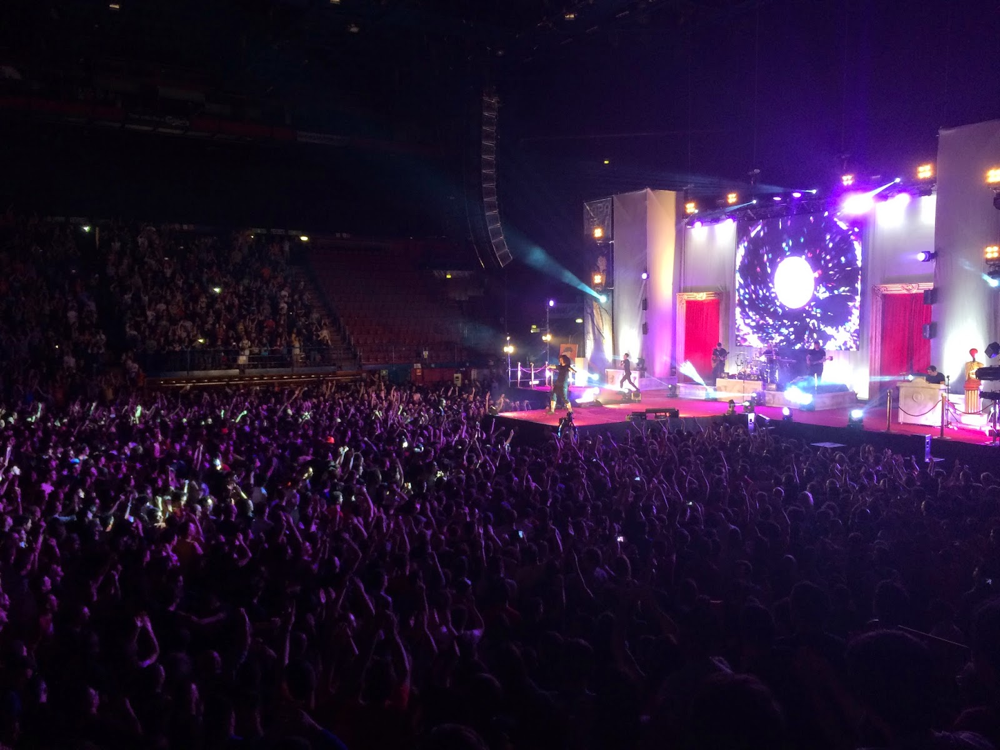
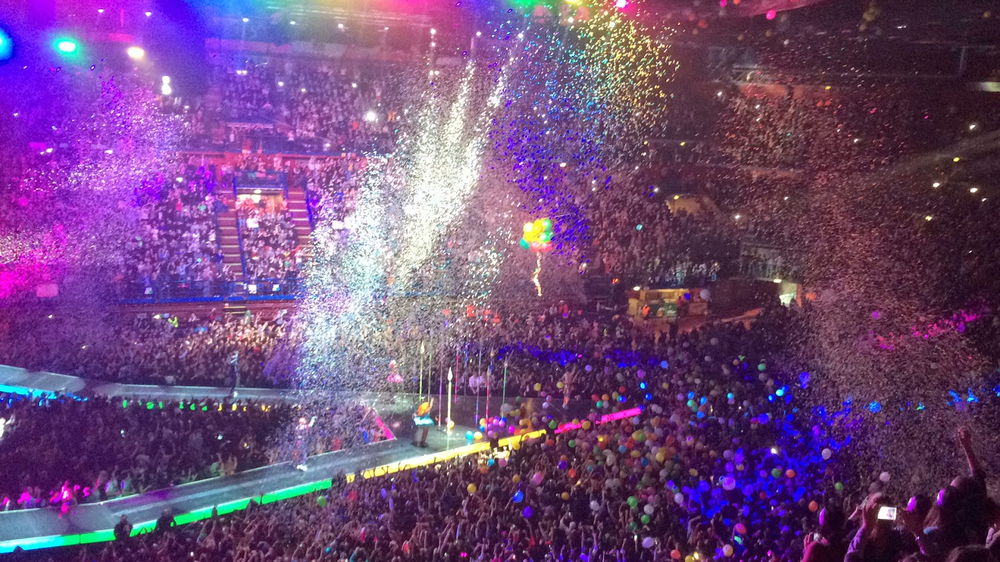
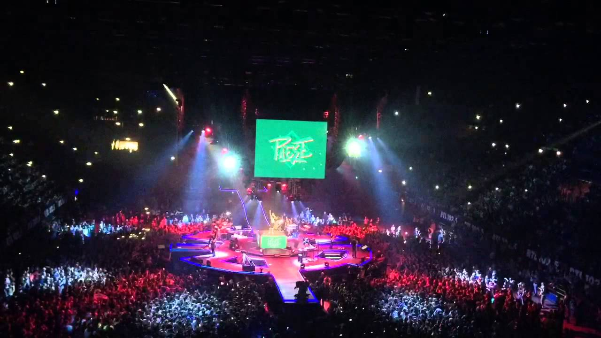

Chris Brown

Up Close and Personal Tour (2006)
- 6 Dicembre Cincinnati
- 7 Dicembre Chicago
- 8 Dicembre Detroit
- 9 Dicembre Baltimore
- 13 Dicembre Memphis
- 14 Dicembre Houston
- 16 Dicembre Atlanta
- 20 Dicembre Philadelphia
- 21 Dicembre New York City
- 22 Dicembre Washington DC
- 23 Dicembre Greensboro
- 26 Dicembre Miami
- 29 Dicembre Oakland
- 30 Dicembre Los Angeles
- 4 Gennaio Las Vegas
- 5 Gennaio Anaheim
- 6 Gennaio Phoenix
- 8 Gennaio Kansas City
- 9 Gennaio St. Louis
- 11 Gennaio Tampa
- 12 Gennaio New Orleans
- 13 Gennaio Dallas

F.A.M.E. Tour (2011)
- 20 Aprile Adelaide
- 23 Apr Melbourne
- 26 Aprile Sydney
- 29 Aprile Brisbane
- 12 Settembre Toronto
- 14 Settembre bufalo
- 16 Settembre Holmdel
- 17 Settembre Washington DC
- 18 Settembre Detroit
- 21 Settembre Cincinnati
- 23 Settembre Tinley Park
- 24 Settembre Maryland Heights
- 25 Settembre Noblesville
- 28 Settembre Baltimora
- 30 Settembre Uniondale
- 1 Ottobre Raleigh
- 2 Ottobre Atlanta
- 5 Ottobre Miami
- 7 Ottobre Tampa
- 8 Ottobre carlotta
- 9 Ottobre Virginia Beach
- 14 Ottobre Dallas
- 15 Ottobre new Orleans
- 16 Ottobre The Woodlands
- 18 Ottobre Fenice
- 20 Ottobre Los Angeles
- 22 Ottobre Concordia
- 23 Ottobre Wheatland
- 26 Ottobre Memphis
- 28 Ottobre Philadelphia

Carpe Diem Tour(2012)
- 14 novembre 2012 Copenhagen
- 17 novembre 2012 Oslo
- 19 novembre 2012 Stoccolma
- 22 Novembre 2012 Berlino
- 23 Novembre 2012 Stoccarda
- 27 nov 2012 Dortmund
- 29 novembre 2012 Francoforte
- 30 Novembre 2012 Basilea
- 3 dicembre 2012 Dublino
- 5 dicembre 2012 Anversa
- 6 Dicembre 2012 Amsterdam
- 7 dicembre 2012 Parigi
- 9 Dicembre 2012 Parigi
- 11 Dicembre 2012 Dubai
- 15 Dicembre 2012 Johannesburg
- 17 dicembre 2012 Durban
- 19 Dicembre 2012 Città del Capo
- 20 Dicembre 2012 Città del Capo
- 30 dicembre 2012 Abidjan